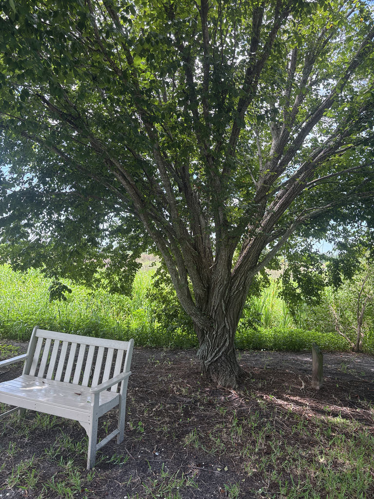

- Dutch elm disease, carried by a bark beetle introduced in the 1920s, eliminated the vast arching elm canopies that once lined American streets from coast to coast — one of the most dramatic ecological losses in North American urban history.
- Florida's own variety still grows wild in floodplain forests, raising cathedral-like canopies far from the diseased northern populations.
- Young leaves are edible and were used by Native Americans.
- A living reminder of both beauty and the fragility of monocultures.
Native to the United States and Canada as far west as Saskatchewan, Montana and Wyoming. Florida has its own elm variety — Ulmus americana var. floridana — the Florida elm, found naturally in floodplain forests from the northern coast to the central peninsula. The American Elm was once the most beloved street tree in the eastern United States before Dutch Elm Disease.
- Dutch Elm Disease — a fungal infection introduced to North America from Europe in the 1920s on infected timber — is one of the most catastrophic plant disease introductions in American history. The fungus is spread by bark beetles that bore through elm wood carrying spores from infected trees.
- Within decades it had killed an estimated 40 million elms across North America, erasing the cathedral-like canopy that once defined countless American streets.
- Florida's native elm — sometimes distinguished as Ulmus americana var. floridana — survived in floodplain forests far enough south that the disease pressure was lower. The specimen at Palma Sola is at the southern edge of the range and represents a population that never experienced the mass die-off of northern trees. It's a quiet survivor.
- The vase shape is the classic elm silhouette — branches arch dramatically upward and outward, creating a cathedral-like canopy that 19th-century city planners planted along boulevards for exactly that reason. The Live Oak in our collection creates a similar canopy effect through an entirely different architecture — a comparison worth making when standing between them.
The American Elm's spring seed crop — small, papery, wafer-like samaras — ripens early before most other trees fruit, providing a critical gap-filling food source for birds including finches, cardinals, and sparrows at a lean time of year. The dense canopy is a documented nesting site for Baltimore Orioles and other songbirds. The bark is used by cavity-nesting birds.
The foliage supports a large community of moth and butterfly caterpillars — Question Mark and Eastern Comma butterflies both use elms as larval hosts, connecting this tree to the broader butterfly community already active in the park.
drops leaves in fall with minimal color change in Florida. Leafs out early in spring, often before most other deciduous trees.
Small, green, appearing in early spring before leaves on pendulous stalks. Wind-pollinated. Inconspicuous but early — an important early pollen source.
Small, round, papery samaras (winged seeds) about half an inch across, ripening in spring — among the earliest tree seeds to ripen in Florida.
3 to 6 inches long, ovate with a doubly toothed margin, noticeably asymmetrical at the base — the two sides of the leaf where they meet the stem are clearly different lengths. Rough above, softer below.
Light gray to brown, developing interlacing flat-topped ridges and fissures with age. Corky ridges on smaller branches of some individuals.
Classic vase-shaped silhouette — upright trunk branching into arching limbs that spread widely. Visible from a distance as one of the most recognizable tree profiles in North America.
The asymmetrical leaf base is the most reliable quick ID — hold a leaf by its stem and look at where the blade meets: one side sits higher than the other. In spring, watch for the papery seed discs that cover the branches before the leaves are fully open.
The young spring leaves are edible raw or cooked, and the red inner bark was once brewed into a coffee-like drink — but it isn't a significant food plant today.
It has no known toxicity to people or pets.


- © Randall Carter (CC-BY-NC), via iNaturalist